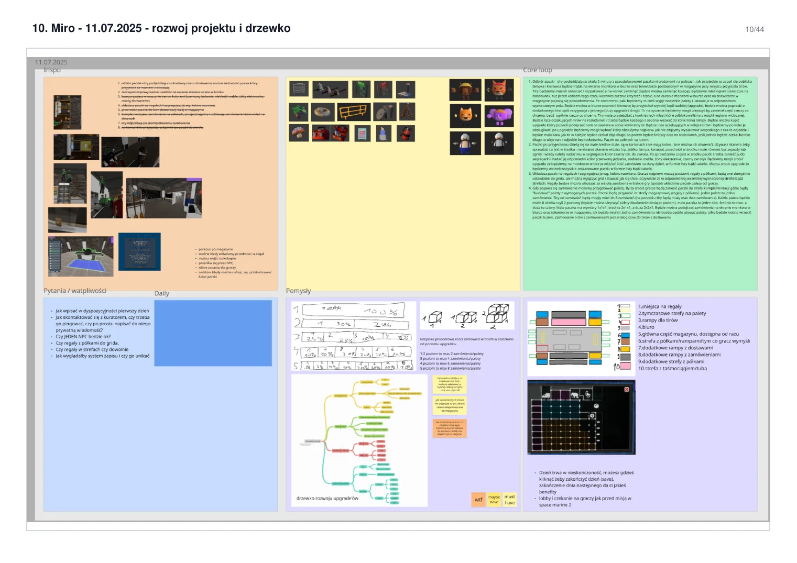
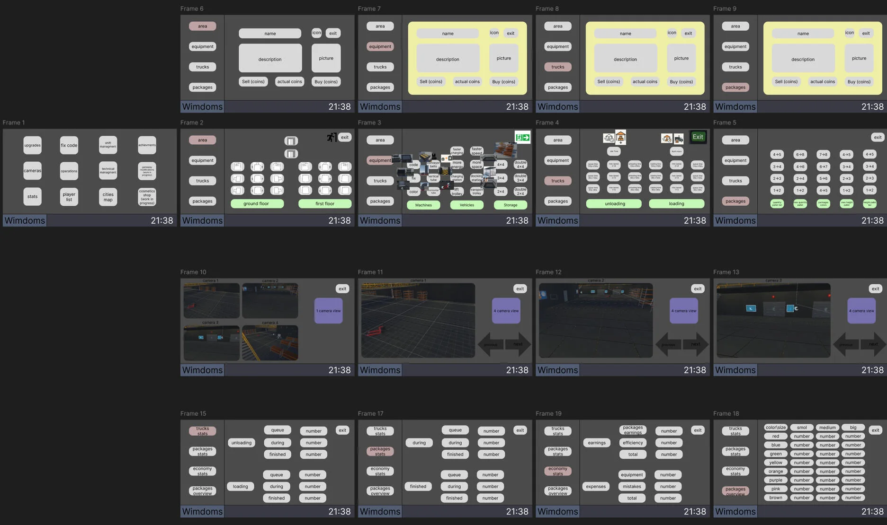
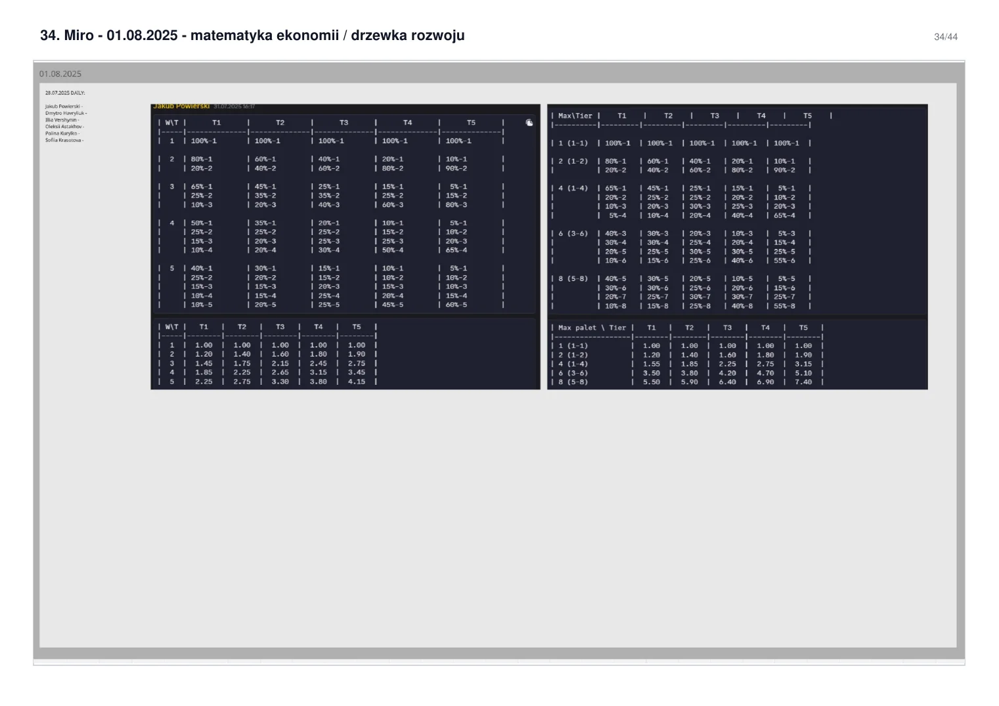
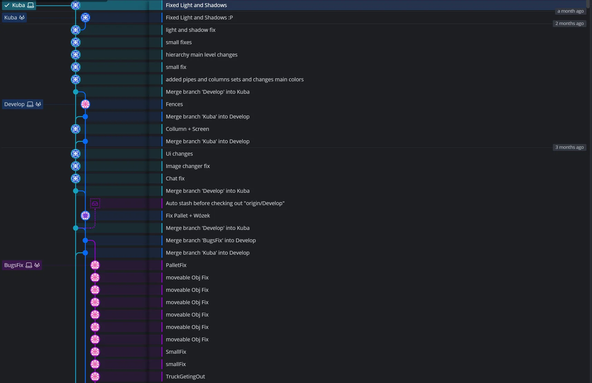
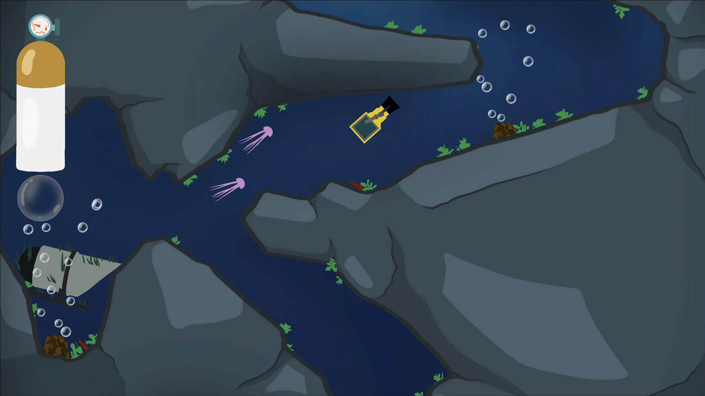
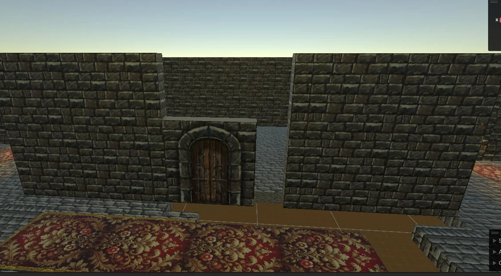
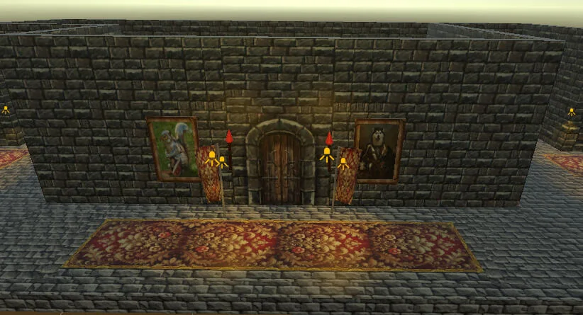

2024 / 25
1. rok
Pierwsze projekty zespołowe, level design, prototypy, podstawy Unity i pierwsze game jamy.
Archiwum rozwojuGAME DESIGN · SYSTEMS DESIGN · LEVEL DESIGN
Student Game Development w Collegium Da Vinci. Najmocniej interesuje mnie systems design: reguły, zależności, balans, progresja, przepływ informacji oraz przejście od dokumentu do działającego prototypu.
DEVELOPMENT TIMELINE
Pierwszy rok zostaje jako krótki punkt odniesienia. Największy ciężar mają Warehouse Coop, dokumentacja z drugiego roku oraz samodzielne systemy rozwijane latem 2026.
Pierwsze projekty zespołowe, level design, prototypy, podstawy Unity i pierwsze game jamy.
Archiwum rozwojuPierwszy projekt o większej skali: praktyki, prowadzenie zespołu, systemy, dokumentacja i iteracja produkcyjna.
Duży skok odpowiedzialnościCuckoo Clock / Keeper, Chrono Runes, Bazul Aronis i znacznie bogatsza dokumentacja projektowa.
Proces + systemy + dokumentacjaTournament Manager, Animated Effects Editor, Core Clash oraz własna strona internetowa / hub projektów.
Najbardziej aktualny poziom pracyRok dopiero się rozpoczął. Nie przypisuję tu projektów, które nie zostały jeszcze wykonane.
Do uzupełnienia w trakcie rokuWHAT I DESIGN
Dlatego portfolio łączy reguły i balans z level flow, dokumentacją, testami oraz interfejsami potrzebnymi do uruchomienia projektu.
Reguły, stany, warunki, zależności, progresja, ekonomia i zachowanie systemów w edge case'ach.
Koszty, ryzyko, nagrody, parametry i iteracja zachowania mechaniki po testach.
Układ przestrzeni, prowadzenie gracza, tempo i powiązanie poziomu z mechanikami.
Role użytkowników, workflow, narzędzia i interfejsy korzystające ze wspólnej logiki.
FEATURED PROJECTS
Te projekty dostają najwięcej miejsca. Pokazują prowadzenie produkcji, projektowanie systemów, narzędzia oraz pracę pod ograniczeniem czasu.
Kooperacyjna gra o pracy i rozwoju magazynu. Projekt powstawał podczas praktyk między pierwszym a drugim rokiem. Odpowiadałem za prowadzenie projektu oraz dużą część game designu.




Konfigurowalny system do tworzenia i prowadzenia turniejów. Głównym zadaniem było zaprojektowanie jednego modelu obsługującego różne formaty, etapy i role użytkowników.
Round-robin, Swiss, single elimination, double elimination, seeding, routing, standings, etapy i kwalifikacje.
Organizer, host, audience i projector — różne potrzeby użytkowników, wspólne reguły turnieju.
Jedno źródło reguł i danych turnieju, wiele sposobów prezentacji. Interfejs może się zmieniać bez kopiowania logiki systemowej.
Edytor animowanych overlayów projektowany jako rozszerzalne narzędzie. Efekt jest zestawem parametrów i zachowań, a nie jednorazową animacją.
Presety, intensywność, seed, blend mode, obszary działania, warstwy i parametry charakterystyczne dla efektu.
Preview oraz eksport do StreamElements / OBS, z naciskiem na powtarzalne wdrażanie kolejnych efektów.
Dodawanie kolejnych efektów nie powinno wymagać przebudowy całego edytora ani utraty kontroli nad kompozycją warstw.
Projekt zespołowy wyróżniony podczas uczelnianego game jamu. W portfolio pozostaje jako ważny element pierwszego roku, ale nie jest prezentowany na równi z późniejszymi systemami.
Pracę pod presją czasu, ograniczanie scope'u, komunikację zespołową i dowiezienie gry w krótkim cyklu produkcyjnym.

SELECTED DESIGN DECISIONS
Każda karta prowadzi do projektu, w którym problem, decyzja i kompromis mają ślad w dokumentacji albo działającym prototypie.
YEAR TWO · 2025 / 26
Ta część ma większe znaczenie niż pierwszoroczne screeny. Pokazuje projektowanie mechanik i poziomów, rozwój dokumentacji oraz analizę systemów.
Projekt 2D rozwijany od analizy referencji i ręcznych layoutów po implementację w Unity. Zachowała się również obszerna dokumentacja projektowa: prezentacje, lista mechanik, raporty testowe, Brandbook i Launch Bible. Raport poziomu 1 obejmuje 7 testerów i konkretne metryki tras, zgonów oraz czasu przejścia.


Rozbudowany projekt systemowy: klasy i archetypy, karty, timeline, system runiczny, progresja runu, eventy i metaprogresja. Jednym z najmocniejszych śladów pracy jest liczba zachowanych dokumentów projektowych.
Projekt walk flot 2D. Analiza ruchu z bezwładnością, klas statków, AI, unikania kolizji, broni, asteroid i czytelności starć o dużej liczbie obiektów.
SUMMER 2026 · INDEPENDENT WORK
Wakacje po drugim roku nie były przerwą od projektowania. Powstały wtedy samodzielne narzędzia, systemy i prototypy webowe, które mocniej reprezentują obecny poziom niż materiały z pierwszego roku.
PROJECT ARCHIVE
Archiwum jest celowo zwarte. Ma pokazać zakres doświadczeń i rozwój, ale nie odciągać uwagi od bardziej reprezentatywnych projektów.
Fizyczna gra PvP rozwijana wokół kulek, talii, archetypów oraz event-driven systemu triggerów i warunków.
12 kul o różnych właściwościach fizycznych oraz pięć poziomów budujących trudność od prostych przeszkód po bardziej wymagające wykorzystanie terenu.
Wcześniejszy projekt zespołowy zachowany jako część historii nauki Unity i współpracy projektowej.
Wczesny projekt studencki. W portfolio pełni funkcję punktu odniesienia do późniejszego rozwoju level designu i workflow.
Jeden z pierwszych projektów zespołowych na studiach — zachowany jako część chronologii rozwoju warsztatu.
Materiały z pierwszego roku pozostają w archiwum, ale nie są traktowane jako reprezentacja aktualnego poziomu pracy.
EARLY WORK · YEAR ONE
Ta galeria jest celowo krótka. Pokazuje początki pracy z layoutem, środowiskiem i prototypami, bez sugerowania, że są to materiały reprezentujące obecny poziom.


EVIDENCE-BASED PORTFOLIO
Dlatego V9 rozdziela deklaracje od dowodów: screenshoty procesu, dokumenty, działające prototypy, repozytoria i raporty QA. Nie każdy materiał musi być publiczny, ale paczka zachowuje źródła do dalszej selekcji.
GDD, Miro, layouty, wireframe’y, system maps i Launch Bible.
HTML/WebGL/Unity prototypy oraz działające narzędzia, gdy są gotowe do pokazania.
Raporty testowe, QA, design review, decyzje i kolejne wersje systemu.
Repozytoria, Git workflow, backlog i materiały koordynacyjne — używane jako kontekst, nie ozdoba.
DESIGN DOCUMENTATION
Na stronie pokazuję skróty. Poniżej są wejścia do właściwych dokumentów, które pozwalają sprawdzić projekt głębiej.
Przed publikacją docelową trzeba sprawdzić ustawienia udostępniania linków Google Drive. V9 zawiera też lokalne kopie wybranych materiałów, ale publicznie warto wystawić tylko dokumenty bez danych wewnętrznych i zbędnego chaosu roboczego.
ABOUT / WORKFLOW
Najważniejsza jest dla mnie decyzja projektowa: reguły, zależności, czytelność i zachowanie systemu w praktyce. Projekt staram się doprowadzić od koncepcji do wersji, którą można rzeczywiście uruchomić i przetestować.
Unity oraz Git/GitKraken są moimi podstawowymi narzędziami. AI wykorzystuję jako narzędzie wykonawcze do prototypowania i realizowania własnych koncepcji — szczególnie wtedy, gdy projekt wymaga wejścia w nowe środowisko technologiczne.
Co ma osiągnąć system i jakie decyzje ma generować?
Reguły, przepływy, warunki, dane i edge case'y.
Najmniejsza wersja, którą można rzeczywiście sprawdzić.
Feedback, QA, balans i kolejne uproszczenia lub rozszerzenia.
CONTACT
Game Designer / Systems Designer · Poznań
END OF PORTFOLIO
Po wdrożeniu pod /portfolio/ przycisk ../ wraca do strony hostującej. Lokalnie prowadzi do katalogu głównego serwera developerskiego.